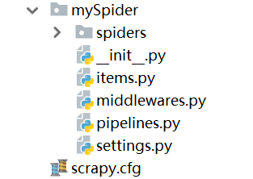

Scrapy安装配置
Windows 安装方式
- Python 2 / 3
- 通过anaconda安装 Scrapy 框架
conda install -c conda-forge scrapy
Ubuntu 需要9.10或以上版本安装方式
- Python 2 / 3
- 安装非Python的依赖
sudo apt-get install python-dev python-pip libxml2-dev libxslt1-dev zlib1g-dev libffi-dev libssl-dev - 通过pip 安装 Scrapy 框架
sudo pip install scrapy
具体Scrapy安装流程参考：http://doc.scrapy.org/en/latest/intro/install.html#intro-install-platform-notes 里面有各个平台的安装方法
如果提示openssl错误，可以参考
>> pip uninstall pyopenssl
>> pip uninstall cryptography
>> pip install pyopenssl
>> pip install cryptography
scrapy入门实例
一. 新建项目(scrapy startproject)
在开始爬取之前，必须创建一个新的Scrapy项目。进入自定义的项目目录中，运行下列命令：
scrapy startproject 项目名
scrapy.cfg ：项目的配置文件
mySpider/ ：项目的Python模块，将会从这里引用代码
mySpider/items.py ：项目的目标文件
mySpider/pipelines.py ：项目的管道文件
mySpider/settings.py ：项目的设置文件
mySpider/spiders/ ：存储爬虫代码目录
mySpider/middlewares.py：中间件文件
二、创建爬虫 （spiders）
spider是自己定义的类，scrapy用它来从网页里抓取内容，并解析抓取的结果，这个类必须继承scrapy.Spider，定义spider的名称和起始请求，包括了对页面的请求以及页面的处理.
在当前目录下输入命令，在目录下创建一个名为quotes的爬虫，并指定爬取域的范围：
scrapy genspider quotes quotes.toscrape.com
spider目录里多了一个quotes.py文件，代码如下:
import scrapy
class QuotesSpider(scrapy.Spider):
name = 'quotes'
allowed_domains = ['quotes.toscrape.com']
start_urls = ['http://quotes.toscrape.com/']
def parse(self, response):
pass
其实也可以由我们自行创建quotes.py并编写上面的代码，只不过使用命令可以免去编写固定代码的麻烦,要建立一个Spider， 你必须用scrapy.Spider类创建一个子类，并确定了三个强制的属性 和 一个方法。
name = ""：这个爬虫的识别名称，必须是唯一的，在不同的爬虫必须定义不同的名字。allow_domains = []是搜索的域名范围，也就是爬虫的约束区域，规定爬虫只爬取这个域名下的网页，不存在的URL会被忽略。start_urls = ()：爬取的URL元祖/列表。爬虫从这里开始抓取数据，所以，第一次下载的数据将会从这些urls开始。其他子URL将会从这些起始URL中继承性生成。parse(self, response)：他是spider的一个解析方法，每个初始URL完成下载后将被调用，调用的时候传入从每一个URL传回的Response对象来作为唯一参数，主要作用如下：- 负责解析返回的网页数据(response.body)，提取结构化数据(生成item)
- 生成需要下一页的URL请求。
二、创建item(mySpider/items.py)
- 打开mySpider目录下的
items.py - Item 定义结构化数据字段，用来保存爬取到的数据，有点像Python中的dict，但是提供了一些额外的保护减少错误。
- 可以通过创建一个
scrapy.Item类， 并且定义类型为scrapy.Field的类属性来定义一个Item（可以理解成类似于ORM的映射关系）。
接下来，创建一个QuotesSpider 类，和构建item模型（model）。
import scrapy
class MyspiderItem(scrapy.Item):
text = scrapy.Field()
author = scrapy.Field()
tags = scrapy.Field()
解析Response
爬取整个网页完毕，接下来的就是的取过程了，首先观察页面源码,直接用XPath开始提取数据吧。 我们之前在items.py 里定义了一个MyspiderItem类。 这里引入进来
from mySpider.items import MyspiderItem
然后将我们得到的数据封装到一个 QuotesSpider 对象中：
from mySpider.items import MyspiderItem
def parse(self, response):
quotes = response.xpath("//div[@class='quote']")
for quote in quotes:
item = MyspiderItem()
item['text'] = quote.xpath(".//span[@class='text']/text()").extract_first()
item['author']= quote.xpath(".//small[@class='author']/text()").extract_first()
item['tags'] = quote.xpath(".//a[@class='tag']/text()").extract()
yield item
我们暂时先不处理管道，后面会详细介绍。
保存数据
scrapy保存信息的最简单的方法主要有四种，-o 输出指定格式的文件，，命令如下：
# json格式，默认为Unicode编码
scrapy crawl quotes -o quotes.json
# json lines格式，默认为Unicode编码
scrapy crawl quotes -o quotes.jsonl
# csv 逗号表达式，可用Excel打开
scrapy crawl quotes -o quotes.csv
# xml格式
scrapy crawl quotes -o quotes.xml